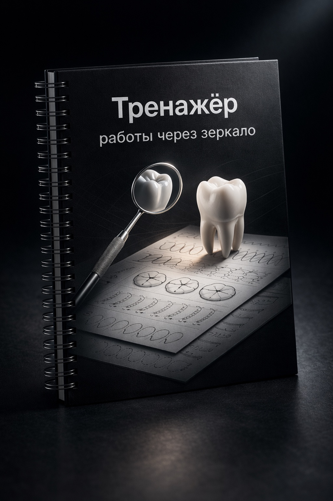

Авторский premium-тренажёр для стоматологов
Освой работу через зеркало быстрее и увереннее
Авторский тренажёр для студентов-стоматологов: рабочая тетрадь, зеркало и система упражнений для развития непрямого зрения, точности и контроля руки.
- Формат A4
- Тетрадь + зеркало
- Пошаговые упражнения
- Предзаказ 1490 ₽
Hero visual
Премиальный рендер продукта
Даже если изображение временно недоступно, layout первого экрана остаётся полностью собранным.

В чём основная сложность
Навык нужен всем, но системно тренировать его обычно негде
Лендинг должен быстро объяснять ценность продукта. Поэтому боли собраны в четыре коротких, узнаваемых сигнала.
Сложно привыкнуть к отражению
В начале обучения мозг медленно адаптируется к обратной координации и непрямому зрению.
Рука двигается неуверенно
Даже простые траектории становятся нестабильными, когда работаешь не напрямую, а через зеркало.
Теряется ориентация
Отражение меняет привычное восприятие формы, движения и направления инструмента.
Нет понятной системы тренировки
Без последовательных упражнений навык часто развивается случайно, а не целенаправленно.
Что это за продукт
Не просто тетрадь, а компактная система тренировки навыка
«Тренажёр работы через зеркало» объединяет физический комплект и понятную логику занятий: от базовых линий до более точных упражнений на контроль руки, траектории и ориентацию в отражении.
A4
Рабочая тетрадь
Структурированные задания с возрастающей сложностью.
01
Зеркало в комплекте
Тренировка сразу в нужной механике работы.
02
Пошаговая система
Последовательность упражнений помогает тренироваться регулярно и без хаоса.
Что внутри
Тренировочные страницы сделаны под ритм короткой, повторяемой практики
Внутренние развороты построены так, чтобы развивать непрямое зрение и точность без перегруза: линии, формы зубов, контуры, повторяющиеся паттерны и задания на стабильность движения.
Упражнения на траектории
Повторяемые линии и формы для постановки точного движения.
Формы зубов и контуры
Отработка ориентации, симметрии и понимания формы в отражении.
Точность и контроль руки
Блок под дополнительный premium-визуал, который усиливает доверие и ощущение готового продукта.
Как проходит тренировка
Три шага, которые легко встроить в регулярную практику
Открой задание
Выбери упражнение и подготовь рабочую позицию.
Выполняй через зеркало
Следи за линией, отражением и стабильностью движения.
Повторяй и отслеживай прогресс
Чем больше повторений, тем увереннее координация и контроль руки.
Для кого
Сделано для тех, кому важен рост навыка, а не случайная практика
Студенты стоматфака
Чтобы быстрее пройти этап адаптации к работе через зеркало.
Начинающие стоматологи
Чтобы укрепить контроль руки и повысить уверенность в работе.
Тем, кто хочет развить непрямое зрение
Для регулярной короткой практики без сложной подготовки.
Тем, кто любит системность
Чтобы тренировать движение не хаотично, а по понятной структуре.
Цена и предзаказ
Стартовая цена первой партии заметно ниже полной стоимости
Сейчас можно оставить предзаказ по цене запуска. После выхода основной партии стоимость вернётся к полной цене.
Стоимость комплекта
Зафиксируйте цену запуска до выхода основной партии
2490 ₽
-40%
1490 ₽
Экономия
1000 ₽
Полная цена составит 2490 ₽. Для первых заявок действует стартовая стоимость 1490 ₽, чтобы можно было войти в запуск на более выгодных условиях.
Форма предзаказа
Оставьте заявку, чтобы зафиксировать стартовую цену
FAQ
Коротко о запуске, формате и пользе продукта
Тренажёр в первую очередь сделан для студентов стоматологических факультетов, ординаторов и начинающих стоматологов, которым важно быстрее адаптироваться к работе через зеркало. Он особенно полезен на этапе, когда теорию уже понимаешь, а уверенности в отражении, ориентации и движении руки ещё не хватает.
В комплект входит рабочая тетрадь формата A4 с системой последовательных упражнений и зеркало для практики в нужной механике. Основной продукт здесь именно тетрадь-тренажёр: она задаёт структуру занятий и помогает проходить путь от базовых линий и контуров к более точным упражнениям.
Сейчас мы собираем предзаказ на первую партию. После того как будет сформирован стартовый список заявок, мы отдельно сообщим подтверждённые сроки готовности, комплектации и старта выдачи или отправки продукта.
База отлично подходит новичкам, потому что помогает пройти этап первичной адаптации к непрямому зрению без хаотичных попыток. Но и тем, кто уже начал практику, тренажёр тоже полезен: повторяющиеся упражнения помогают быстрее укрепить точность, аккуратность и контроль руки.
Да. Формат специально рассчитан на короткие самостоятельные сессии дома, в вузе или перед практическими занятиями. Для работы не нужна сложная подготовка: достаточно ровной поверхности, ручки или карандаша и зеркала из комплекта.
Регулярная короткая практика помогает быстрее ориентироваться в отражении, спокойнее вести линию, точнее контролировать движение руки и в целом увереннее чувствовать себя при работе через зеркало. Главная ценность не в разовом упражнении, а в системном повторении, которое постепенно убирает скованность и хаос в движениях.